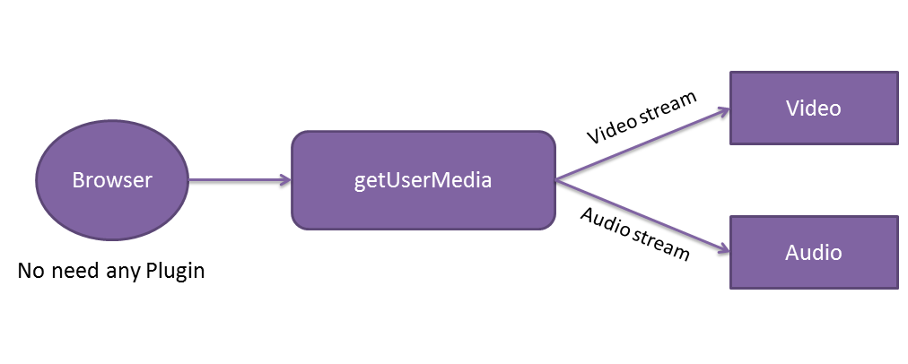

- No need to install Plugins!
- Secure Channel
- Bandwidth friendly
- Chrome
- Chrome for Android
- Firefox
- Opera
- Native java and Objective-C bindings
- MediaStream (aka getUserMedia)
- MediaStream (aka getUserMedia)
- RTCPeerConnection
- MediaStream (aka getUserMedia)
- RTCPeerConnection
- RTCDataChannel
Represents a stream of audio and/or video

navigator.getUserMedia(constraints, successCallback, errorCallback);
<script>
navigator.getUserMedia = ( navigator.getUserMedia ||
navigator.webkitGetUserMedia ||
navigator.mozGetUserMedia ||
navigator.msGetUserMedia
);
var errorCallback = function(e) {
console.log('Reeeejected!', e);
};
navigator.getUserMedia( {video: true, audio: true} ,
function(localMediaStream) {
var video = document.querySelector('video');
video.src = window.URL.createObjectURL(localMediaStream);
video.onloadedmetadata = function(e) {
//do some stuff
};
}, errorCallback);
</script>
navigator.getUserMedia(constraints, successCallback, errorCallback);
- Constraints
- an object having either one or both the properties audio and video.
- To get both video and audio you would use: { video: true, audio: true }
- successCallback
- A function that will be called if the media stream is successfully loaded.
- The function will be passed a LocalMediaStreamobject.
- errorCallback (optional)
- A function that will be called if the media stream cannot be loaded.
- Signal Processing
- Codec handling
- Peer to peer communication
- Security
- Bandwidth Management

pc.onaddstream = gotRemoteStream;
pc.addStream(localStream);
pc.createOffer(gotOffer);
function gotOffer(desc) {
pc.setLocalDescription(desc);
sendOffer(desc);
}
function gotAnswer(desc) {
pc.setRemoteDescription(desc);
}
function gotRemoteStream(e) {
attachMediaStream(remoteVideo, e.stream);
}
- Same API as WebSockets
- Ultra-low latency
- Unreliable or reliable
- Secure
optional: [{ RtpDataChannels : true}]
});
pc.ondatachannel = function(event) {
receiveChannel = event.channel;
receiveChannel.onmessage = function(event){
document.querySelector( "div#receive" ).innerHTML = event.data;
};
};
sendChannel = pc.createDataChannel( "sendDataChannel" , {reliable: false});
document.querySelector( "button#send" ).onclick = function (){
var data = document.querySelector( "textarea#send" ).value;
sendChannel.send(data);
};
- Session control, network and media informatiion.
- It’s peer to peer but still need server to make sure the both side can agree to conduct the session
- WebRTC doesn’t provide this